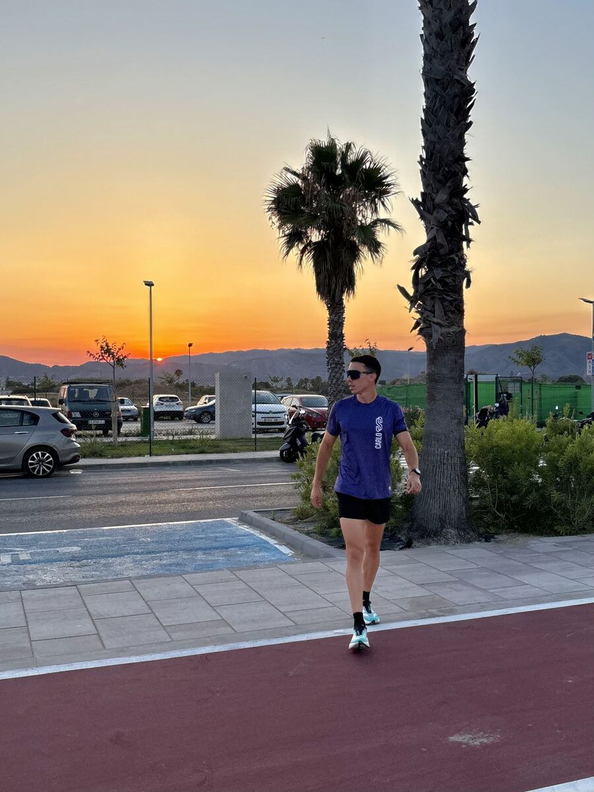

Plan de Media Maratón
Llega a la línea de salida con la marca que te propusiste, sin cargar entrenamientos que no sabes si te van a pasar factura el día de la carrera.
Consultar disponibilidad →Licenciado en Ciencias del Deporte
Planes 100% personalizados según tus forma física, tu disponibilidad y tu objetivo real — centrándonos en mejorar los puntos clave.
Cuestionario de 3 minutos + respuesta personal en 24h. Sin coste, sin compromiso.
Empieza por aquí
5K, 10K, media maratón o maratón. Planes que se ajustan a tu calendario de carreras real.
Ver planes de carrera → OposicionesPolicía Nacional, Policía Local y Bomberos. Entrenamos exactamente lo que marca tu baremo.
Ver preparación física →
Sobre mí
Soy Licenciado en Ciencias de la Actividad Física y del Deporte y llevo más de 3 años diseñando planes de resistencia para quienes quieren bajar su marca en una carrera, realizar una prueba física y mejorar su salud.
Cada plan parte de tus tests iniciales para conocerte y ajustar semana a semana los entrenamiento según tus sensaciones, respaldado por tus sensaciones y datos de rendimiento registrados diariamente.
Metodología
Test de campo, historial deportivo y disponibilidad real de tiempo. Sin esto, cualquier plan es una suposición.
Bloques de base, específico y puesta a punto, calculados según tu objetivo y la fecha de tu carrera.
Cada semana se compara lo planificado con lo ejecutado y se corrige si hace falta — no se espera al final para descubrir un desajuste.
Las últimas semanas se dedican a afinar ritmo y estrategia de carrera, nunca a acumular más carga.
Servicios
Formato online, con seguimiento individual. Precios orientativos — se confirman según tu punto de partida.
Llega a la línea de salida con la marca que te propusiste, sin cargar entrenamientos que no sabes si te van a pasar factura el día de la carrera.
Consultar disponibilidad →Completa los 42K con una estrategia de ritmo y nutrición probada semana a semana, no improvisada los últimos 10 kilómetros.
Consultar disponibilidad →Baja tu tiempo en 10K con un plan que respeta tu vida diaria, sin entrenamientos que no puedes sostener más de dos semanas.
Consultar disponibilidad →Empieza a correr con una progresión segura que te lleva a completar tu primera carrera sin lesionarte por el camino.
Consultar disponibilidad →Policía Nacional · Policía Local · Bomberos
Llega al día del examen físico con la marca exacta que exige el baremo, entrenada y comprobada con antelación — no descubierta ese mismo día.
Consultar disponibilidad →Entrenamos por trimestres
xxxx
Consultar disponibilidad →formando corredores de todos los niveles, desde su primera carrera hasta su próxima maratón.
Cada plan se basa en principios de fisiología del ejercicio, no en plantillas genéricas.
entrenados, con mejoras documentadas en marca personal en 5K, 10K, media maratón y maratón.
"Ahora disfruto mucho más, lo he notado sobre todo en sesiones largas de 10-12km. Antes me costaba mucho más, hoy en día se me hacen más amenas y se me pasa volando. Entrenaba sin motivación y sin constancia. En el mejor de los caos 3 días por semana, pero sin un objetivo claro y sin tener claro los ritmos a los que tenía que ir."
Ningún plan sale de una plantilla: cada semana se ajusta según cómo ha respondido tu cuerpo a la anterior.
Resultados
Mejorar en 5k con 3 meses partiendo de una meseta de varios meses sin bajar marca.
Debut en maratón tras conseguir mejor marca personal en media maratón un mes antes.
Mejora de marca en media maratón en un ciclo completo de 12 semanas se entrenamiento.
Preguntas frecuentes
Todo el proceso está estructurado de forma profesional y cercana. Para la parte técnica, trabajamos a través de la app Intervals.icu, donde tendrás todo tu calendario de entrenamientos, las cargas y el análisis de tu rendimiento. Para el día a día, utilizamos WhatsApp para la comunicación 1:1. Por ahí resolveremos dudas al momento, haremos ajustes semanales y mantendremos la motivación a tope.
Sí. Correr no es solo sumar kilómetros. En las planificaciones incluimos siempre rutinas de entrenamiento de fuerza enfocadas específicamente en la prevención de lesiones. Es fundamental preparar el cuerpo y tener una base fuerte para asimilar las cargas de carrera de forma segura y evitar parones. Todo lo que hagas tendrá sentido y un porqué.
Por supuesto. Ofrezco entrenamientos personalizados para empezar a correr con seguridad desde cero, hasta planificaciones específicas para pruebas físicas de oposiciones (800m, 1000m, 1500m o 2000m) o preparación de maratones. El entrenamiento 1:1 se adapta al 100% a tu nivel real, tus objetivos y tu disponibilidad semanal.
Yo me implico al 100% en diseñar un proceso con sentido y dirección, y espero exactamente el mismo nivel de compromiso por tu parte. Esto es un trabajo en equipo continuo, si tú pones las ganas, yo te doy el camino.
No puedo prometerte una marca exacta ni garantizar un aprobado — nadie honesto puede. Lo que sí hago es revisar tu progreso cada semana y ajustar el plan a tiempo si algo no va como esperábamos, en vez de esperar al final para descubrirlo.
Cuanto antes empecemos, más margen tienes para ajustar, corregir y llegar en tu mejor forma — no para improvisar en las últimas semanas. Corre, entrena, supera tus límites